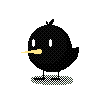

You are the ultimate bird HATER... and you know some magic. Deal with them..

This game was coded in P5.js using a software called Processing. For this assignment we were given some basic game element code and were tasked with either reskinning the game or redesigning it. I chose to reskin the game and add some new features as well. In terms of reskinning, I drew and added small animations to all the visuals in Procreate. The hands holding up "L" on the transition screen were my left hand photographed and then pixelated on IbisPaint X. I tried to animate the magic spell the user moves around, but I focused all the animation on the top wisps, not thinking about the size of the sprite in accordance with everything else, so it doesn't look that animated.
While thinking about what to make for this assignment, I decided I wanted to try using movement keys instead of the mouse movement. Googling "p5js wasd logic" I found THIS code by gmein26 and used its logic. Trying to find out what I needed to code in order to make the sprite controlled by WASD be able to trigger the random teleportation of the bird took way longer than it needed to. I fear that in a frustrated state, I turned to the dark side.. and asked ChatGPT why my code wasn't working. Sadly enough, it gave good debugging advice and I was able to get the logic working to a satisfied state. The spell sprite needs to be redone and I need to better refine the "distance between bird and ball = teleport" code, but overall I enjoyed this project. If I find the time and the motivation, it would be cool to recode and design a more fun/complex game.
//game
//let capture; video stuff
var ballx = 300;
var bally = 300;
var ballSize = 40;
var score = 0;
var gameState = "intro";
var img;
var spell;
var grass;
var titleScreen;
var transitionEnd;
var transitionLvl;
var endScreen;
var spellX = 300;
var spellY = 300;
var spellSize = 30;
function preload() {
titleScreen = loadImage('https://sethtobeck.github.io/images/startingscreenbird.gif');
img = loadImage('https://sethtobeck.github.io/images/birdsprite.gif');
spell = loadImage('https://sethtobeck.github.io/images/spell.gif');
grass = loadImage('https://sethtobeck.github.io/images/grass.png');
endScreen = loadImage('https://sethtobeck.github.io/images/endingscreen.gif');
transitionEnd = loadImage('https://sethtobeck.github.io/images/transitionend.gif');
transitionLvl = loadImage('https://sethtobeck.github.io/images/transitionlvl.gif');
}
//end of preload ===========================================================
function setup() {
createCanvas(600, 600);
// capture = createCapture(VIDEO); video stuff
textAlign(CENTER);
textSize(20);
// capture.size(50, 50); video stuff
// capture.hide(); video stuff
} //end of setup============================================================
function draw() {
background(220);
// image(capture, 0, 0, 90, 75); VIDEO
// text("LIVE REACTION", 75, 20); VIDEO CAPTION
if(gameState == "intro"){
levelIntro();
}
if(gameState == "L1"){
levelOne();
}
if(gameState == "L2"){
levelTwo();
}
if(gameState == "L3"){
levelThree();
}
if(gameState == "LT"){
levelTransition();
}
if(gameState == "win"){
levelWin();
}
//"does not equal" is !==
if (gameState !== "intro" && gameState !== "LT" && gameState !== "win"){
fill(0);
text((score + "/40 birds relocated"), width/2, 40);
}
} //end of draw=============================================================
function levelIntro(){
background(titleScreen);
if (gameState == "intro" && (key == 'p' || key == 'P')){
gameState = "L1";
}
}
function levelOne(){
background(grass);
text("level 1", width/2,height-20);
var distToBall = dist(ballx, bally, mouseX, mouseY);
if(distToBall < ballSize/2){
ballx = random(width-ballSize) +ballSize/2;
bally = random(height-ballSize) +ballSize/2;
score = score + 1;
}
if(score>=5){
gameState = "L2";
}
line(ballx, bally, mouseX, mouseY);
image(img, ballx-ballSize/2, bally-ballSize/2, ballSize, ballSize);
noCursor();
image(spell, mouseX-15, mouseY-15, spellSize, spellSize);
} //end of level 1 =======================================================
function levelTwo(){
background(grass);
text("level 2", width/2,height-20);
var distToBall = dist(ballx, bally, mouseX, mouseY);
if(distToBall < ballSize/2){
ballx = random(width-ballSize) +ballSize/2;
bally = random(height-ballSize) +ballSize/2;
score = score + 1;
}
if(score>=15){
gameState = "LT";
spellX = width/2;
spellY = height-50;
}
//line(ballx, bally, mouseX, mouseY);
image(img, ballx-ballSize/2, bally-ballSize/2, ballSize, ballSize);
image(spell, mouseX-15, mouseY-15, spellSize, spellSize); // spell controlled by mouse
} //end of level 2 =======================================================
function levelTransition(){
background(transitionLvl);
//text("Let's try some left hand casting.. (WASD to Move)", width/2,height-20);
if (gameState == "LT" && (key == 'w' || key == 'W' || key == 'a' || key == 'A' || key == 's' || key == 'S' || key == 'd' || key == 'D')){
gameState = "L3";
}
} //end of transition to level 3 =========================================
function levelThree(){
background(grass);
fill(0);
text("level 3", width/2,height-20);
noCursor();
image(img, ballx-ballSize/2, bally-ballSize/2, ballSize, ballSize);
if (keyIsDown(65)) {
spellX -= 4;
}
if (keyIsDown(68)) {
spellX += 4;
}
if (keyIsDown(87)) {
spellY -= 4;
}
if (keyIsDown(83)) {
spellY += 4;
}
var distToBall = dist(ballx, bally, spellX, spellY);
if (distToBall < (ballSize / 2 + spellSize /2)) {
ballx = random(width - ballSize) + ballSize / 2;
bally = random(height - ballSize) + ballSize / 2;
score = score + 1;
//ballSize = ballSize - 1;
}
image(spell, spellX - spellSize/2, spellY - spellSize/2, spellSize, spellSize);//USER
if(score>39){
image(transitionEnd)
gameState = "win";
}
} //end of level 3 =======================================================
function levelWin(){
background(endScreen);
} //end